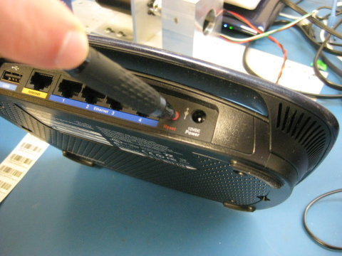
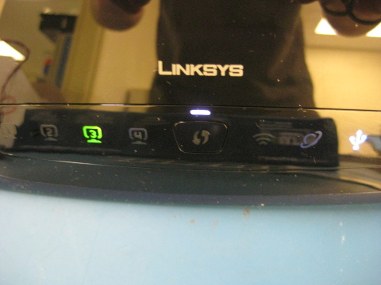

Unplug power cable and press the reset button with a pin as shown. Hold the reset button.
Continue holding the reset button until the purple light is on.
You may now release the "Reset" button.
If the light doesn't turn on, press "Cancel". If you are satisfied you have done this correctly, press "Continue".